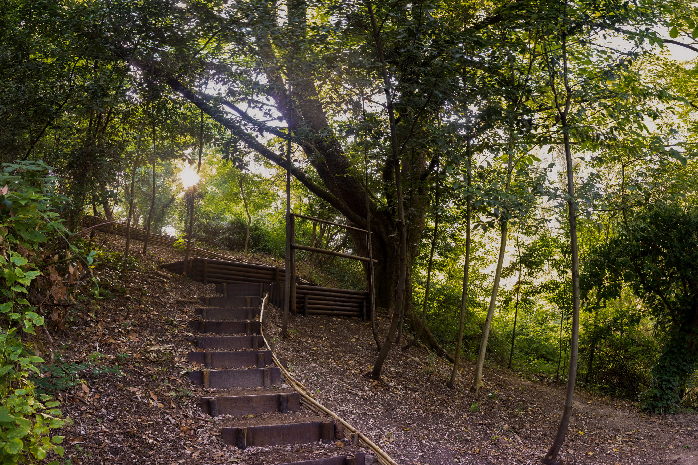

Passeggiando
Tra La Storia
Un'immersione nella rinascita del quartiere di San Lorenzo di
Fabriano
Tour 3D
Visita il percorso in un'esperienza di visualizzazione a 360 gradi.
Visita il percorso in 3d
Rivalorizzazione del parco fluviale del Giano
Passeggiando Tra La Storia nasce da una collaborazione tra amici che con la propria
passione e la voglia di cambiamento studiano e lavorano per donare alla cittadinanza un piccolo angolo di
paradiso.
Vieni a visitare il percorso storico-naturalistico
Visita questa oasi di verde urbano a 5 minuti a piedi dal centro storico di
Fabriano.
Indicazioni stradali
Dicono di noi
Estratti di quello che è stato scritto riguardo il progetto.
"Avanzavo lentamente con gli occhi sgranati e con la gratitudine profonda verso
chi aveva fatto quel lavoro di bonifica.
E mentre mi chiedevo chi dover ringraziare per cotanto regalo, ecco che sbucano fuori tre ragazzi con la
gentilezza impressa nei loro modi di fare…
Lo stanno facendo per amore e per passione verso la città di Fabriano.
Se non fosse per la pandemia, me li abbraccerei tutti!"
Maria Cristina Corvo
""Anche una casa piccola può nascondere meraviglie, seppellite sotto mille
scartoffie."
"Il nostro paesaggio costeggia scenari di rara bellezza, ma spesso non notiamo le cose finché non ci
penzola sopra un' insegna. Il progetto " Passeggiando tra la storia" nasce dal desiderio di ridare
dignità ai paesaggi invisibili""
Jacopo Loretelli
Per il Settimanale L'Azione
"Alcuni ragazzi, colti e gentili, [...] si sono rimboccati le maniche, hanno
scavato, disboscato e ripulito tutta la zona animati dall'amore per Fabriano.
È stato un piacere sapere che tanta bella gioventù si spende per la propria città e mi pare
sia la dimostrazione che quando la motivazione è forte tutto si può fare. Bravi"
Cittadino Fabrianese